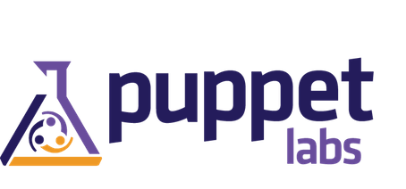
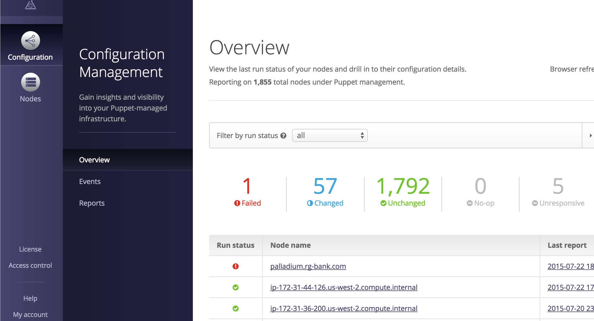
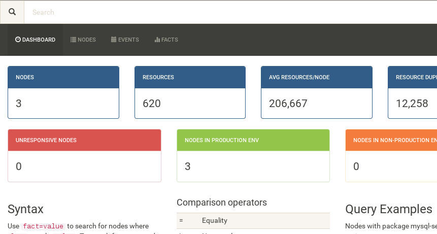
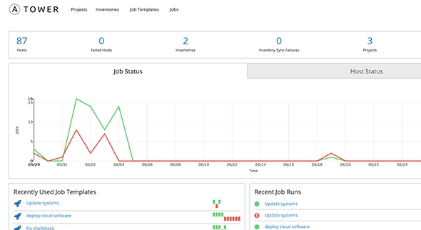
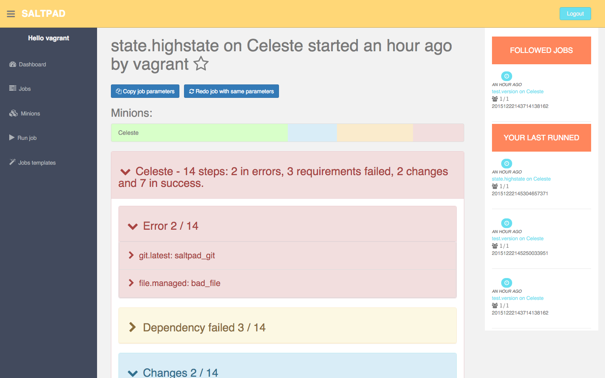
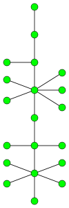
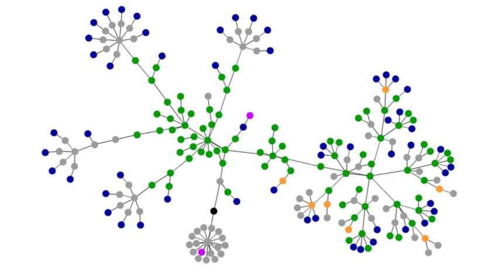

Puppet, Ansible, Salt
Maturidade, Simplicidade e Flexibilidade
Diego Morales
O que vem por aí
- Quem são, e o cenário geral de configuration management.
- Arquitetura básica de cada um
- Pagando ...
- ... e não pagando
- Show me the code
- Comunidade e Documentação
Online: http://dgmorales.info/cm-pas
Config Management


Em uma palavra ...
Puppet: Maturidade
Ansible: Simplicidade
Salt: Flexibilidade
Puppet & PuppetLabs
Criado em 2005, por um sysadmin, Luke Kanies.
Puppet (2)
- Master (pull) e Masterless (pull rodando local).
- Novo Puppet Server
- DSL + templates ERB (ruby)
- Feito em ruby / clojure / java ... DSL torna isso geralmente irrelevante.
- Segurança e auth: certificados SSL
Puppet (3): Enterprise

- Maturidade!
- Dashboard
- Node classification
- Novo Orchestrator
- Pricing: US$ 120/node/ano.
Puppet (4): no Enterprise

Ansible & Ansible Inc. RedHat
"Ansible’s main goals are simplicity and ease-of-use."
Criado em 2012, por Michael DeHaan, bebendo muito do Puppet.
Ansible (2)
- Push com SSH (Simplicidade!). Pull rodando local.
- Windows: WinRM + PowerShell Remoting.
- Orquestração em várias máquinas. Strategies?
- Python!
- YAML + templates jinja2
- Auth/Crypto: by SSH
Ansible (3): Tower

Ansible (4): no Tower
Salt & SaltStack
Criado em 2011, por Thomas Hatch.
Salt (2)
- Push com SSH. Push/Pull com ZeroMQ , Pull rodando local. (Flexibilidade!)
- Python
- YAML + templates jinja2, porém o próprio YAML pode ser "templated"
- Auth/Crypto: ZeroMQ crypto?, e by SSH
Salt (3): Enterprise
?
- Novato: ainda em um early adopter program.
- Sem pricing divulgado.
Salt (4): no Enterprise

Show me the code!
Package, File, Service
http://jjasghar.github.io/blog/2015/12/20/chef-puppet-ansible-salt-rosetta-stone/
Puppet
package { 'openssh-server':
ensure => installed,
}
file { '/etc/ssh/sshd_config':
source => 'puppet:///modules/sshd/sshd_config',
owner => 'root',
group => 'root',
mode => '0640',
notify => Service['sshd']
require => Package['openssh-server'],
}
service { 'sshd':
ensure => running,
enable => true,
}
Ansible
- name: install the latest version of openssh-server
package: name=openssh-server state=present
- name: place our sshd_config
template:
src: /mytemplates/sshd_config.j2
dest: /etc/ssh/sshd_config
owner: root
group: root
mode: 0644
- service: name=ssh state=started
Salt
openssh-server:
pkg.installed:
- name: openssh-server
service.running:
- name: sshd
- enable: True
- require:
- pkg: openssh-server
file.managed:
- name: /etc/ssh/sshd_config
- source: salt://ssh/sshd_config
- user: root
- group: root
- mode: 640
- watch_in:
- service: openssh-server
Loops
Puppet
Ansible
Salt
"Baterias" internas e externas
Puppet Forge: 4000+ módulos, 36 Supported, 79 Approved. E alguns poucos tipos nativos.
Ansible: batteries included, muitos módulos. E 5000+ roles no Galaxy.
E o Salt sendo o Salt: temos execution modules, state modules, e mais. Tem de tudo no salt-contrib, e agora no SaltStarters.
Documentação ...
... Puppet

- Madura, organizada, completa.
- https://docs.puppetlabs.com/
- Recomendo: Learning VM.
... Ansible
- Fácil, estilo tutorial. Mas não tão boa como referência.
- http://docs.ansible.com/
- Começa no Getting Started e vai embora...
... Salt
- Uma floresta: vasta, linda, horrível, confusa, perigosa.
- https://docs.saltstack.com/en/latest/
- Um oásis de ordem e amigabilidade: Getting Started
Comunidade e Brasil
Puppet, pacote completo: listas br e en, telegram, IRC #puppet-br, #puppet, meetup. Empresa BR: Instruct e outras...
https://telegram.me/joinchat/AejjFQIq_2kBH1EQ7mVfjw
Ansible... em inglês: #ansible, lista. Meetups BR parados: SP e RJ.
Salt ... em inglês: #salt, lista. E no Brasil nada...
Concluindo
De novo: maturidade, flexibilidade, simplicidade.
Peraí, e o Docker nisso tudo?
Github repo em breve...
Contato
Diego Morales
 morales@propus.com.br
morales@propus.com.br
 @dgmorales
@dgmorales
Slides: http://dgmorales.info/cm-pas
Blog: Do, Automate, Repeat http://doauto.wordpress.com